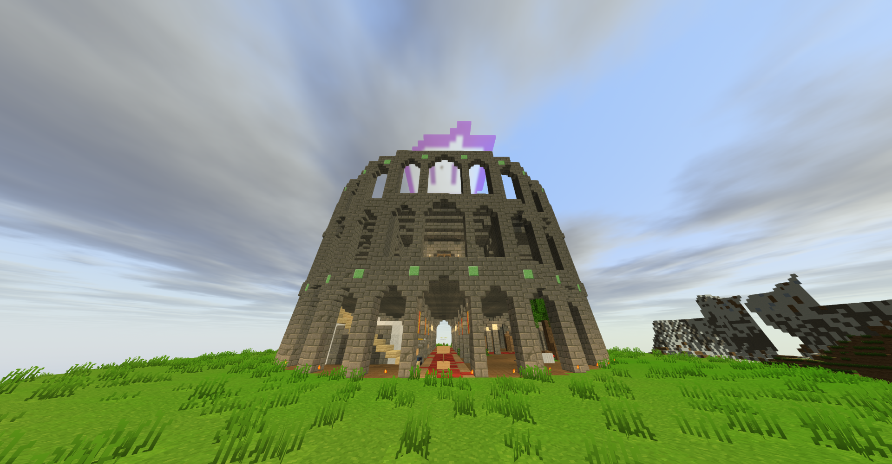

WynnCraft FightClub Season 1 Recap

Over the course of 15 weeks, WCFC Season 1 has it’s winner: SPAMLMB!!!
Season 1 began with some action-packed fights between Melon and LuCoolUs, facing off combat warp on combat warp. Many competitors have risent and fallen and rules have changed much since the beginning of WCFC.
I am happy to announce that in Season 2 of WCFC, Warp will be BANNED!!!
Your top 10 Qualifying competitors in Season 1 are as follows:
1. Tealycraft - Rank: Emerald
2. _Beanb - Rank: Emerald
3. SpamLMB - Rank: Emerald
4. 3ndCraft - Rank: Emerald
5. Klaetius - Rank: Silver
6. iamaratyes - Rank: Silver
7. TrialExpired - Rank: Bronze
8. thedumox - Rank: Bronze
9. DeathsAbyss - Rank: Bronze
10. NagisaStreams - Rank: Bronze
The season ended with a massive clash in the finals. Klaetius, TrialExpired, the dumox, DeathsAbyss, and NagisaStreams were all eliminated in the quarterfinal rounds.
IAmARatYes, running his trademark Nullification EleDef build. However, he was quickly overpowered by _Beanb’s Raw Spell Damage with that highly powerful Idol.
Tealycraft, as #1 seed in qualifiers was favored to win a match against SpamLMB’s Combat Warp, but in an incredible upset, Tealy lost the match to the up and coming #3 seed.
In the final round, _Beanb was once again favored to win, as her Idol build had bested SpamLMB’s combat warp on 3 separate prior occasions.
But in a final effort to defeat her, Spam made use of tactical flight and avoidance with his combat warp, favoring a hit-and-run playstyle, usually ineffective in PVP, but strangely very-effective against _Beanb’s Idol. She couldn’t keep up, and couldn’t tank the damage.
In the last moments of the fight, SpamLMB emerged victorious and was crowned the Season 1 WCFC Champion.
What happened to the other semifinalists? _Beanb was never seen in a WCFC again for unknown reasons. Tealy left competition to focus on his Ambrosia business and become a GM for WynnCraft. After a mostly-successful seaso, IAmARatYes now serves as a Referee on the WCFC Staff team.
Unfortunately, footage from the WCFC Season 1 final was lost to time, and no longer exists.
ARCHIVE LINKS:
WCFC WEEK 1 TIKTOKWCFC WEEK 2 TIKTOK